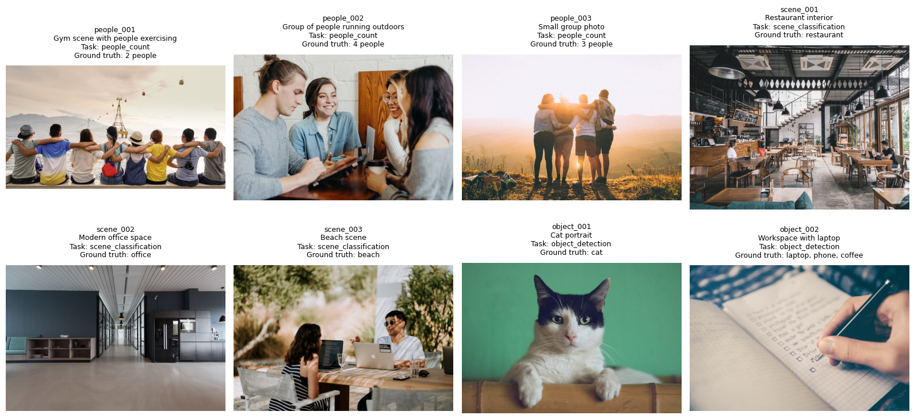
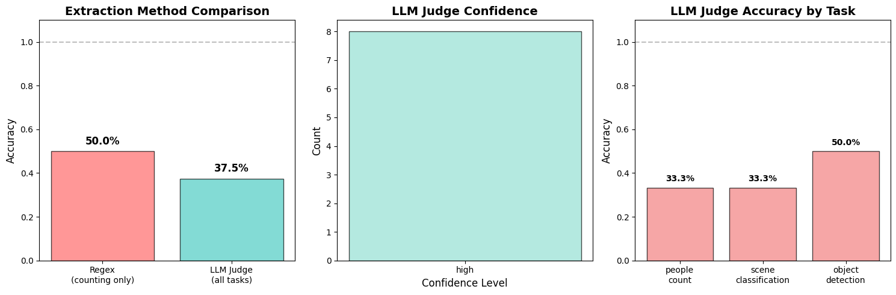

# Install required packages (uncomment if needed)
# !pip install pillow requests pydantic numpy pandas matplotlib python-dotenvOverview
When evaluating Vision-Language Models (VLMs) on tasks like people counting, object detection, or scene understanding, we face a common challenge: how do we extract and validate structured information from free-form text responses?
Traditional approaches using regex patterns quickly become unwieldy and fragile. Instead, we can use an LLM as a judge with structured outputs to:
- Parse VLM responses reliably
- Extract specific information (e.g., counts, classifications)
- Validate against ground truth
- Provide evaluation metrics
This notebook demonstrates: - Using VLMs (Claude/Qwen) via OpenRouter for vision tasks - Implementing LLM-as-judge with structured outputs via JSON mode - Comparing regex vs LLM judge approaches - Computing evaluation metrics
Setup and Dependencies
API Key Configuration
Before running this notebook, you need to set up your OpenRouter API key:
Get an API key: Visit https://openrouter.ai/keys to create an account and get your API key
Create a
.envfile in the root of your project directory with the following content:# OpenRouter API Configuration # Get your API key from: https://openrouter.ai/keys OPENROUTER_API_KEY=sk-or-v1-your-actual-key-hereImportant: Make sure
.envis in your.gitignoreto avoid committing your API key to version control
import os
import json
import re
from pathlib import Path
from typing import List, Dict, Optional, Literal
from io import BytesIO
import requests
from PIL import Image
from pydantic import BaseModel, Field
import pandas as pd
import numpy as np
import matplotlib.pyplot as plt
from dotenv import load_dotenv
# Load environment variables
load_dotenv()
# OpenRouter configuration
OPENROUTER_API_KEY = os.getenv("OPENROUTER_API_KEY")
OPENROUTER_BASE_URL = "https://openrouter.ai/api/v1"
if not OPENROUTER_API_KEY:
print("⚠️ WARNING: OPENROUTER_API_KEY not found in environment variables!")
print("Please set it in your .env file")
else:
print("✓ OpenRouter API key loaded successfully")✓ OpenRouter API key loaded successfullyPart 1: Understanding the Evaluation Tasks
We’ll evaluate VLMs on several common computer vision tasks:
Task 1: People Counting
Count the number of people visible in an image. This is challenging because: - People may be partially occluded - Lighting and angles vary - VLM responses vary in format (“I see 3 people” vs “There are three individuals” vs “Count: 3”)
Task 2: Scene Classification
Identify the type of location or scene. Challenges include: - Ambiguous scenes that could fit multiple categories - Varying levels of detail in VLM responses - Different terminology for the same concept
Task 3: Object Detection
Identify specific objects in the image. Complex because: - Multiple objects may be present - Similar objects (car vs truck) - VLM may use different names for objects
Let’s create our evaluation dataset with diverse examples:
# Evaluation dataset with diverse tasks and images
# Note: We deliberately use prompts that encourage varied response formats
# to demonstrate why regex-based parsing is fragile
evaluation_dataset = [
# People counting tasks - varied prompts to get different response formats
{
"id": "people_001",
"image_url": "https://images.unsplash.com/photo-1529156069898-49953e39b3ac?w=800",
"task": "people_count",
"ground_truth": 2,
"prompt": "Describe this scene and mention how many people you see.", # Encourages narrative response
"description": "Gym scene with people exercising"
},
{
"id": "people_002",
"image_url": "https://images.unsplash.com/photo-1543269865-cbf427effbad?w=800",
"task": "people_count",
"ground_truth": 4,
"prompt": "What's happening in this image? Include the number of people.", # Mixed format
"description": "Group of people running outdoors"
},
{
"id": "people_003",
"image_url": "https://images.unsplash.com/photo-1511632765486-a01980e01a18?w=800",
"task": "people_count",
"ground_truth": 3,
"prompt": "Tell me about this photo, specifically mentioning the count of people present.",
"description": "Small group photo"
},
# Scene classification tasks
{
"id": "scene_001",
"image_url": "https://images.unsplash.com/photo-1555396273-367ea4eb4db5?w=800",
"task": "scene_classification",
"ground_truth": "restaurant",
"prompt": "Describe the type of venue shown here.",
"description": "Restaurant interior"
},
{
"id": "scene_002",
"image_url": "https://images.unsplash.com/photo-1497366216548-37526070297c?w=800",
"task": "scene_classification",
"ground_truth": "office",
"prompt": "What kind of space is this?",
"description": "Modern office space"
},
{
"id": "scene_003",
"image_url": "https://images.unsplash.com/photo-1540553016722-983e48a2cd10?w=800",
"task": "scene_classification",
"ground_truth": "beach",
"prompt": "Identify the location type.",
"description": "Beach scene"
},
# Object detection tasks - require structured list output
{
"id": "object_001",
"image_url": "https://images.unsplash.com/photo-1514888286974-6c03e2ca1dba?w=800",
"task": "object_detection",
"ground_truth": ["cat"],
"prompt": "What animals can you see?",
"description": "Cat portrait"
},
{
"id": "object_002",
"image_url": "https://images.unsplash.com/photo-1484480974693-6ca0a78fb36b?w=800",
"task": "object_detection",
"ground_truth": ["laptop", "phone", "coffee"],
"prompt": "Describe what you see on the desk or table.",
"description": "Workspace with laptop"
},
]
print(f"Dataset: {len(evaluation_dataset)} images")
print(f"Tasks: {', '.join(set(item['task'] for item in evaluation_dataset))}")
print(f"\nTask distribution:")
for task in set(item['task'] for item in evaluation_dataset):
count = sum(1 for item in evaluation_dataset if item['task'] == task)
print(f" {task}: {count} images")Dataset: 8 images
Tasks: scene_classification, people_count, object_detection
Task distribution:
scene_classification: 3 images
people_count: 3 images
object_detection: 2 imagesVisualize ALL Images
Let’s display all images from our evaluation dataset:
def display_all_images(dataset):
"""Display all images from the dataset in a grid."""
num_images = len(dataset)
cols = 4
rows = (num_images + cols - 1) // cols # Ceiling division
fig, axes = plt.subplots(rows, cols, figsize=(16, rows * 4))
if rows == 1:
axes = axes.reshape(1, -1)
axes = axes.ravel()
for idx, item in enumerate(dataset):
try:
response = requests.get(item['image_url'])
img = Image.open(BytesIO(response.content))
axes[idx].imshow(img)
axes[idx].axis('off')
title = f"{item['id']}\n{item['description']}\nTask: {item['task']}"
if item['task'] == 'people_count':
title += f"\nGround truth: {item['ground_truth']} people"
elif item['task'] == 'scene_classification':
title += f"\nGround truth: {item['ground_truth']}"
else:
title += f"\nGround truth: {', '.join(item['ground_truth'])}"
axes[idx].set_title(title, fontsize=9, pad=10)
except Exception as e:
axes[idx].text(0.5, 0.5, f"Error loading image:\n{str(e)}",
ha='center', va='center')
axes[idx].axis('off')
# Hide any unused subplots
for idx in range(num_images, len(axes)):
axes[idx].axis('off')
plt.tight_layout()
plt.show()
display_all_images(evaluation_dataset)
Part 2: Query VLM and See Raw Outputs
First, let’s see what the VLM actually returns. This will help us understand why parsing is challenging.
def query_vlm_openrouter(image_url: str, prompt: str, model: str = "anthropic/claude-3.5-sonnet") -> str:
"""
Query a VLM via OpenRouter API.
"""
headers = {
"Authorization": f"Bearer {OPENROUTER_API_KEY}",
"Content-Type": "application/json"
}
payload = {
"model": model,
"messages": [
{
"role": "user",
"content": [
{"type": "text", "text": prompt},
{"type": "image_url", "image_url": {"url": image_url}}
]
}
],
"max_tokens": 300
}
response = requests.post(
f"{OPENROUTER_BASE_URL}/chat/completions",
headers=headers,
json=payload
)
response.raise_for_status()
result = response.json()
return result['choices'][0]['message']['content']Get VLM Responses for All Images
Let’s query the VLM and see the raw responses:
# Choose VLM model (options: "anthropic/claude-3.5-sonnet", "qwen/qwen-vl-max")
VLM_MODEL = "anthropic/claude-3.5-sonnet"
print(f"Using VLM: {VLM_MODEL}\n")
print("="*80)
# Get VLM responses
for item in evaluation_dataset:
print(f"\n[{item['id']}] {item['description']}")
print(f"Task: {item['task']}")
print(f"Prompt: {item['prompt']}")
print(f"Ground Truth: {item['ground_truth']}")
try:
vlm_response = query_vlm_openrouter(
image_url=item['image_url'],
prompt=item['prompt'],
model=VLM_MODEL
)
item['vlm_response'] = vlm_response
print(f"\nVLM Response:\n{vlm_response}")
except Exception as e:
print(f"\nError: {str(e)}")
item['vlm_response'] = f"ERROR: {str(e)}"
print("="*80)
print("\nAll VLM responses collected!")Using VLM: anthropic/claude-3.5-sonnet
================================================================================
[people_001] Gym scene with people exercising
Task: people_count
Prompt: Describe this scene and mention how many people you see.
Ground Truth: 2
VLM Response:
This is a heartwarming scene showing a group of 9 people sitting in a row with their arms around each other's shoulders, facing a scenic view. They appear to be sitting along what might be a waterfront or pier. In the background, you can see cable cars or gondolas suspended in the air and mountains in the distance. The people are wearing casual summer attire including t-shirts, hats, and comfortable clothing in various colors like yellow, blue, and grey. The image captures a moment of unity and friendship as they take in the view together. The lighting suggests it might be around sunset or early evening.
================================================================================
[people_002] Group of people running outdoors
Task: people_count
Prompt: What's happening in this image? Include the number of people.
Ground Truth: 4
VLM Response:
This image shows 4 people engaged in what appears to be a casual business meeting or study group. They are seated around a table and appear to be looking at devices or documents together. The setting looks casual with white brick walls and wooden furniture visible in the background. The group appears to be having a positive interaction, with some members smiling and engaged in conversation. They're dressed casually, with some wearing grey and denim clothing.
================================================================================
[people_003] Small group photo
Task: people_count
Prompt: Tell me about this photo, specifically mentioning the count of people present.
Ground Truth: 3
VLM Response:
This photo shows four people standing together in a row, arms around each other's shoulders, as they watch a sunset or sunrise from what appears to be a hilltop or mountain viewpoint. The image has a warm, golden glow from the sun on the horizon, and the figures are silhouetted against the scenic landscape background. They appear to be enjoying a moment of togetherness in nature, with some backpacks or bags visible on the ground near their feet. The photo captures a feeling of friendship, adventure, and connection in the great outdoors.
================================================================================
[scene_001] Restaurant interior
Task: scene_classification
Prompt: Describe the type of venue shown here.
Ground Truth: restaurant
VLM Response:
This appears to be a modern café or coffee shop with an industrial-chic aesthetic. The space features exposed ceiling elements, industrial pendant lighting, and geometric decorative elements hanging from above. The interior is characterized by wooden furniture including tables and chairs, and a wooden service counter/bar area. The design incorporates white brick walls, concrete flooring, and large windows that allow natural light to enter. There are also some plants adding greenery to the space. The overall atmosphere appears casual and welcoming, with a mix of seating options including tables and what looks like some cushioned seating areas. The venue has a contemporary, urban feel that's typical of modern coffee shops and casual dining establishments.
================================================================================
[scene_002] Modern office space
Task: scene_classification
Prompt: What kind of space is this?
Ground Truth: office
VLM Response:
This appears to be a modern office or commercial space. It features a long hallway with glass-walled offices or meeting rooms along one side, and a built-in break area or kitchenette with dark cabinetry and a turquoise bench seat. The space has a minimalist design with a white slatted ceiling, track lighting, and what looks like polished concrete flooring. The color scheme is primarily navy blue, black, and neutral tones, giving it a contemporary professional atmosphere.
================================================================================
[scene_003] Beach scene
Task: scene_classification
Prompt: Identify the location type.
Ground Truth: beach
VLM Response:
This appears to be an outdoor workspace or meeting area, likely at a café or restaurant with a patio setting. There's a wooden table where people are working on laptops, suggesting it's being used as a casual coworking space or for an informal business meeting. The environment has natural elements with greenery visible in the background.
================================================================================
[object_001] Cat portrait
Task: object_detection
Prompt: What animals can you see?
Ground Truth: ['cat']
VLM Response:
In this image, there's a black and white cat with striking green eyes. It appears to be a domestic cat resting on what looks like a wooden surface, possibly a shelf or table. The cat has a distinctive black and white pattern on its face and white fur on its body. The background is a solid green color, making the cat stand out nicely in the photograph.
================================================================================
[object_002] Workspace with laptop
Task: object_detection
Prompt: Describe what you see on the desk or table.
Ground Truth: ['laptop', 'phone', 'coffee']
VLM Response:
In this image, there's a notebook or notepad with a grid pattern visible. Someone is holding a pen or pencil and appears to be writing or marking items on what looks like a checklist or to-do list. The paper appears to be white with blue grid lines, and there are small checkboxes visible on the left side of the written text. The image is taken from a close-up angle and has a slightly soft, artistic focus to it.
================================================================================
All VLM responses collected!Part 3: The Problem with Regex - No Type Safety or Structure Validation
The fundamental issue with regex isn’t just about extracting values—it’s about type safety and structural validation. Let’s see the problems:
Problem 1: No Type Guarantees
Regex can extract a string, but can’t ensure it’s the right type (int, list, enum, etc.)
Problem 2: No Structure Validation
Regex can’t validate complex nested structures or ensure all required fields are present
Problem 3: No Semantic Understanding
Regex can’t understand context, confidence, or provide explanations
Let’s see regex in action:
def regex_extract_count(response: str) -> Optional[int]:
"""
Attempt to extract a count using regex patterns.
This shows how fragile regex-based extraction can be.
"""
if not response or response.startswith("ERROR"):
return None
patterns = [
r'(\d+)\s+(?:people|persons|individuals)',
r'(?:count|total)\s*:?\s*(\d+)',
r'(?:there are|i see|i count)\s*(\d+)',
r'number of people\s*:?\s*(\d+)',
r'(?:^|\s)(\d+)(?:$|\s)', # Just a number
]
for pattern in patterns:
match = re.search(pattern, response.lower())
if match:
return int(match.group(1))
return None
def regex_extract_scene(response: str) -> Optional[str]:
"""Extract scene type - even more fragile!"""
if not response or response.startswith("ERROR"):
return None
# Try to extract first word or phrase
words = response.strip().split()
if words:
return words[0].lower().strip('.,!?')
return None# Try regex extraction - showing its limitations
print("REGEX EXTRACTION ATTEMPTS")
print("="*80)
print("\nNotice the problems:")
print("1. Regex extracts raw values with NO type checking")
print("2. NO validation that the value makes sense")
print("3. NO confidence scores or explanations")
print("4. NO structured error categorization")
print("="*80)
for item in evaluation_dataset:
if item['task'] == 'people_count':
extracted = regex_extract_count(item['vlm_response'])
correct = extracted == item['ground_truth'] if extracted else False
print(f"\n[{item['id']}]")
print(f"VLM Response: {item['vlm_response'][:150]}...")
print(f"Ground Truth: {item['ground_truth']} (type: {type(item['ground_truth']).__name__})")
print(f"Regex Extracted: {extracted} (type: {type(extracted).__name__ if extracted else 'None'})")
print(f"❌ Correct: {'✓' if correct else '✗'}")
print(f"❌ Type validated: No")
print(f"❌ Confidence score: Not available")
print(f"❌ Explanation: Not available")
print("\n" + "="*80)
print("Key Problem: Regex gives you a raw value with ZERO guarantees about:")
print(" - Type correctness (is it really an int?)")
print(" - Semantic validity (does the number make sense?)")
print(" - Confidence (how sure are we?)")
print(" - Structure (for complex outputs like lists/objects)")
print("="*80)REGEX EXTRACTION ATTEMPTS
================================================================================
Notice the problems:
1. Regex extracts raw values with NO type checking
2. NO validation that the value makes sense
3. NO confidence scores or explanations
4. NO structured error categorization
================================================================================
[people_001]
VLM Response: This is a heartwarming scene showing a group of 9 people sitting in a row with their arms around each other's shoulders, facing a scenic view. They ap...
Ground Truth: 2 (type: int)
Regex Extracted: 9 (type: int)
❌ Correct: ✗
❌ Type validated: No
❌ Confidence score: Not available
❌ Explanation: Not available
[people_002]
VLM Response: This image shows 4 people engaged in what appears to be a casual business meeting or study group. They are seated around a table and appear to be look...
Ground Truth: 4 (type: int)
Regex Extracted: 4 (type: int)
❌ Correct: ✓
❌ Type validated: No
❌ Confidence score: Not available
❌ Explanation: Not available
[people_003]
VLM Response: This photo shows four people standing together in a row, arms around each other's shoulders, as they watch a sunset or sunrise from what appears to be...
Ground Truth: 3 (type: int)
Regex Extracted: None (type: None)
❌ Correct: ✗
❌ Type validated: No
❌ Confidence score: Not available
❌ Explanation: Not available
================================================================================
Key Problem: Regex gives you a raw value with ZERO guarantees about:
- Type correctness (is it really an int?)
- Semantic validity (does the number make sense?)
- Confidence (how sure are we?)
- Structure (for complex outputs like lists/objects)
================================================================================Part 4: LLM Judge with Structured Outputs
Now let’s implement the proper solution using JSON mode for structured outputs.
Define Pydantic Schemas
class ComprehensiveEvaluation(BaseModel):
"""Comprehensive evaluation with correctness assessment."""
extracted_value: str = Field(
description="The extracted answer from the VLM response (as a string)"
)
is_correct: bool = Field(
description="Whether the extracted value matches the ground truth"
)
confidence: Literal["high", "medium", "low"] = Field(
description="Confidence level in the evaluation"
)
explanation: str = Field(
description="Detailed explanation of the evaluation"
)
error_type: Optional[str] = Field(
default=None,
description="If incorrect, categorize the error type (e.g., 'undercount', 'overcount', 'misclassification', 'parsing_error')"
)
class ObjectDetectionEvaluation(BaseModel):
"""Evaluation for object detection tasks."""
detected_objects: List[str] = Field(
description="List of objects detected by the VLM"
)
all_objects_found: bool = Field(
description="Whether all ground truth objects were detected"
)
missing_objects: List[str] = Field(
description="Objects in ground truth but not detected"
)
extra_objects: List[str] = Field(
description="Objects detected but not in ground truth"
)
confidence: Literal["high", "medium", "low"] = Field(
description="Confidence level in the evaluation"
)
explanation: str = Field(
description="Explanation of the evaluation"
)Implement LLM Judge Using Structured JSON Output
Using OpenRouter’s JSON mode for guaranteed structured outputs:
def llm_judge_structured(
vlm_response: str,
ground_truth: any,
task_type: str,
response_model: type[BaseModel],
judge_model: str = "anthropic/claude-3.5-sonnet"
) -> BaseModel:
"""
Use LLM as judge with structured JSON outputs via OpenRouter.
Args:
vlm_response: The text response from the VLM
ground_truth: The ground truth value
task_type: Description of the task (e.g., 'people counting')
response_model: Pydantic model for structured output
judge_model: Model to use as judge
Returns:
Structured evaluation result
"""
# Get JSON schema from Pydantic model
schema = response_model.model_json_schema()
prompt = f"""You are evaluating a Vision-Language Model's response for a {task_type} task.
VLM Response:
{vlm_response}
Ground Truth: {ground_truth}
Please extract the answer from the VLM response and evaluate it against the ground truth.
Respond with ONLY a JSON object matching this schema:
{json.dumps(schema, indent=2)}
Do not include any other text or explanation outside the JSON object."""
headers = {
"Authorization": f"Bearer {OPENROUTER_API_KEY}",
"Content-Type": "application/json"
}
payload = {
"model": judge_model,
"messages": [{"role": "user", "content": prompt}],
"response_format": {"type": "json_object"},
"max_tokens": 1024
}
response = requests.post(
f"{OPENROUTER_BASE_URL}/chat/completions",
headers=headers,
json=payload
)
response.raise_for_status()
result = response.json()
result_json = json.loads(result['choices'][0]['message']['content'])
return response_model(**result_json)Part 5: Run Complete Evaluation
Now let’s evaluate all images using both approaches:
JUDGE_MODEL = "anthropic/claude-3.5-sonnet" # Judge model via OpenRouter
print("COMPLETE EVALUATION: Regex vs LLM Judge")
print("="*80)
comparison_results = []
for item in evaluation_dataset:
print(f"\n[{item['id']}] {item['task']}")
print(f"Ground Truth: {item['ground_truth']}")
result = {
'id': item['id'],
'task': item['task'],
'description': item['description'],
'ground_truth': item['ground_truth'],
'vlm_response': item['vlm_response'][:200] if len(item['vlm_response']) > 200 else item['vlm_response']
}
# Regex extraction (only for simple tasks)
if item['task'] == 'people_count':
regex_result = regex_extract_count(item['vlm_response'])
result['regex_extracted'] = regex_result
result['regex_correct'] = regex_result == item['ground_truth'] if regex_result is not None else False
print(f"Regex: extracted={regex_result}, correct={result['regex_correct']}")
# LLM Judge with structured output
try:
if item['task'] == 'object_detection':
judge_result = llm_judge_structured(
vlm_response=item['vlm_response'],
ground_truth=item['ground_truth'],
task_type="object detection",
response_model=ObjectDetectionEvaluation,
judge_model=JUDGE_MODEL
)
result['llm_extracted'] = ', '.join(judge_result.detected_objects)
result['llm_correct'] = judge_result.all_objects_found
result['llm_confidence'] = judge_result.confidence
result['llm_explanation'] = judge_result.explanation
result['llm_missing'] = ', '.join(judge_result.missing_objects)
result['llm_extra'] = ', '.join(judge_result.extra_objects)
else:
task_name = "people counting" if item['task'] == 'people_count' else "scene classification"
judge_result = llm_judge_structured(
vlm_response=item['vlm_response'],
ground_truth=item['ground_truth'],
task_type=task_name,
response_model=ComprehensiveEvaluation,
judge_model=JUDGE_MODEL
)
result['llm_extracted'] = judge_result.extracted_value
result['llm_correct'] = judge_result.is_correct
result['llm_confidence'] = judge_result.confidence
result['llm_explanation'] = judge_result.explanation
result['llm_error_type'] = judge_result.error_type
print(f"LLM Judge: extracted={result['llm_extracted']}, correct={result['llm_correct']}, confidence={result['llm_confidence']}")
print(f"Explanation: {result['llm_explanation'][:100]}...")
except Exception as e:
print(f"LLM Judge Error: {str(e)}")
result['llm_extracted'] = "ERROR"
result['llm_correct'] = False
result['llm_confidence'] = "low"
result['llm_explanation'] = str(e)
comparison_results.append(result)
print("\n" + "="*80)
print("Evaluation complete!")COMPLETE EVALUATION: Regex vs LLM Judge
================================================================================
[people_001] people_count
Ground Truth: 2
Regex: extracted=9, correct=False
LLM Judge: extracted=9, correct=False, confidence=high
Explanation: The VLM clearly stated '9 people' in its response, while the ground truth is 2. This is an unambiguo...
[people_002] people_count
Ground Truth: 4
Regex: extracted=4, correct=True
LLM Judge: extracted=4, correct=True, confidence=high
Explanation: The VLM response clearly states 'This image shows 4 people' at the beginning of its description, and...
[people_003] people_count
Ground Truth: 3
Regex: extracted=None, correct=False
LLM Judge: extracted=4, correct=False, confidence=high
Explanation: The VLM clearly states 'four people' in its response while the ground truth indicates there are 3 pe...
[scene_001] scene_classification
Ground Truth: restaurant
LLM Judge: extracted=café, correct=False, confidence=high
Explanation: The VLM identifies the space primarily as a 'café or coffee shop', while the ground truth label is '...
[scene_002] scene_classification
Ground Truth: office
LLM Judge: extracted=office, correct=True, confidence=high
Explanation: The VLM response clearly identifies the space as an office environment, describing typical office fe...
[scene_003] scene_classification
Ground Truth: beach
LLM Judge: extracted=outdoor workspace/café patio, correct=False, confidence=high
Explanation: The VLM described the scene as an outdoor workspace or café patio with tables, laptops, and greenery...
[object_001] object_detection
Ground Truth: ['cat']
LLM Judge: extracted=cat, correct=True, confidence=high
Explanation: The VLM correctly identified the cat in the image. The response provided detailed description of the...
[object_002] object_detection
Ground Truth: ['laptop', 'phone', 'coffee']
LLM Judge: extracted=notebook, correct=False, confidence=high
Explanation: The VLM completely missed all three ground truth objects (laptop, phone, coffee) and instead detecte...
================================================================================
Evaluation complete!Part 6: Analysis and Metrics
# Create DataFrame
df_results = pd.DataFrame(comparison_results)
# Display summary
print("\nRESULTS SUMMARY")
print("="*80)
display_cols = ['id', 'task', 'ground_truth', 'llm_extracted', 'llm_correct', 'llm_confidence']
if 'regex_extracted' in df_results.columns:
display_cols.insert(4, 'regex_extracted')
display_cols.insert(5, 'regex_correct')
print(df_results[display_cols].to_string(index=False))
RESULTS SUMMARY
================================================================================
id task ground_truth llm_extracted regex_extracted regex_correct llm_correct llm_confidence
people_001 people_count 2 9 9.0 False False high
people_002 people_count 4 4 4.0 True True high
people_003 people_count 3 4 NaN False False high
scene_001 scene_classification restaurant café NaN NaN False high
scene_002 scene_classification office office NaN NaN True high
scene_003 scene_classification beach outdoor workspace/café patio NaN NaN False high
object_001 object_detection [cat] cat NaN NaN True high
object_002 object_detection [laptop, phone, coffee] notebook NaN NaN False high# Calculate metrics
print("\n" + "="*80)
print("ACCURACY METRICS")
print("="*80)
# Overall accuracy
llm_accuracy = df_results['llm_correct'].mean()
print(f"\nLLM Judge Overall Accuracy: {llm_accuracy:.1%}")
# Per-task accuracy
print("\nAccuracy by Task:")
for task in df_results['task'].unique():
task_df = df_results[df_results['task'] == task]
task_acc = task_df['llm_correct'].mean()
print(f" {task}: {task_acc:.1%} ({task_df['llm_correct'].sum()}/{len(task_df)} correct)")
# Regex accuracy (where applicable)
if 'regex_correct' in df_results.columns:
regex_df = df_results[df_results['regex_extracted'].notna()]
if len(regex_df) > 0:
regex_accuracy = regex_df['regex_correct'].mean()
print(f"\nRegex Extraction Accuracy: {regex_accuracy:.1%}")
print(f" Successful extractions: {regex_df['regex_extracted'].notna().sum()}/{len(df_results)} attempts")
# Confidence distribution
print("\nLLM Judge Confidence Distribution:")
conf_dist = df_results['llm_confidence'].value_counts()
for conf, count in conf_dist.items():
print(f" {conf}: {count} ({count/len(df_results)*100:.1f}%)")
================================================================================
ACCURACY METRICS
================================================================================
LLM Judge Overall Accuracy: 37.5%
Accuracy by Task:
people_count: 33.3% (1/3 correct)
scene_classification: 33.3% (1/3 correct)
object_detection: 50.0% (1/2 correct)
Regex Extraction Accuracy: 50.0%
Successful extractions: 2/8 attempts
LLM Judge Confidence Distribution:
high: 8 (100.0%)# Visualizations
fig = plt.figure(figsize=(15, 5))
# Plot 1: Accuracy comparison
if 'regex_correct' in df_results.columns and len(df_results[df_results['regex_extracted'].notna()]) > 0:
ax1 = plt.subplot(1, 3, 1)
methods = ['Regex\n(counting only)', 'LLM Judge\n(all tasks)']
accuracies = [
df_results[df_results['regex_extracted'].notna()]['regex_correct'].mean(),
llm_accuracy
]
colors = ['#FF6B6B', '#4ECDC4']
bars = ax1.bar(methods, accuracies, color=colors, alpha=0.7, edgecolor='black')
ax1.set_ylabel('Accuracy', fontsize=12)
ax1.set_title('Extraction Method Comparison', fontsize=14, fontweight='bold')
ax1.set_ylim([0, 1.1])
ax1.axhline(y=1.0, color='gray', linestyle='--', alpha=0.5)
for bar, acc in zip(bars, accuracies):
height = bar.get_height()
ax1.text(bar.get_x() + bar.get_width()/2., height + 0.02,
f'{acc:.1%}', ha='center', va='bottom', fontweight='bold', fontsize=12)
# Plot 2: Confidence distribution
ax2 = plt.subplot(1, 3, 2)
else:
ax2 = plt.subplot(1, 2, 1)
conf_counts = df_results['llm_confidence'].value_counts()
ax2.bar(conf_counts.index, conf_counts.values, color='#95E1D3', alpha=0.7, edgecolor='black')
ax2.set_xlabel('Confidence Level', fontsize=12)
ax2.set_ylabel('Count', fontsize=12)
ax2.set_title('LLM Judge Confidence', fontsize=14, fontweight='bold')
# Plot 3: Accuracy by task
if 'regex_correct' in df_results.columns and len(df_results[df_results['regex_extracted'].notna()]) > 0:
ax3 = plt.subplot(1, 3, 3)
else:
ax3 = plt.subplot(1, 2, 2)
task_accuracies = []
task_names = []
for task in df_results['task'].unique():
task_df = df_results[df_results['task'] == task]
task_accuracies.append(task_df['llm_correct'].mean())
task_names.append(task.replace('_', '\n'))
bars = ax3.bar(task_names, task_accuracies, color='#F38181', alpha=0.7, edgecolor='black')
ax3.set_ylabel('Accuracy', fontsize=12)
ax3.set_title('LLM Judge Accuracy by Task', fontsize=14, fontweight='bold')
ax3.set_ylim([0, 1.1])
ax3.axhline(y=1.0, color='gray', linestyle='--', alpha=0.5)
for bar, acc in zip(bars, task_accuracies):
height = bar.get_height()
ax3.text(bar.get_x() + bar.get_width()/2., height + 0.02,
f'{acc:.1%}', ha='center', va='bottom', fontweight='bold', fontsize=10)
plt.tight_layout()
plt.show()
Detailed Error Analysis
print("\nDETAILED ERROR ANALYSIS")
print("="*80)
incorrect_items = df_results[~df_results['llm_correct']]
if len(incorrect_items) > 0:
print(f"\nFound {len(incorrect_items)} incorrect evaluations:\n")
for _, item in incorrect_items.iterrows():
print(f"ID: {item['id']} ({item['task']})")
print(f"Description: {item['description']}")
print(f"Ground Truth: {item['ground_truth']}")
print(f"LLM Extracted: {item['llm_extracted']}")
if 'llm_error_type' in item and item['llm_error_type']:
print(f"Error Type: {item['llm_error_type']}")
print(f"Explanation: {item['llm_explanation']}")
print(f"VLM Response: {item['vlm_response']}")
print("-" * 80)
else:
print("\nAll evaluations were correct!")
DETAILED ERROR ANALYSIS
================================================================================
Found 5 incorrect evaluations:
ID: people_001 (people_count)
Description: Gym scene with people exercising
Ground Truth: 2
LLM Extracted: 9
Error Type: overcount
Explanation: The VLM clearly stated '9 people' in its response, while the ground truth is 2. This is an unambiguous difference between the extracted count and the ground truth.
VLM Response: This is a heartwarming scene showing a group of 9 people sitting in a row with their arms around each other's shoulders, facing a scenic view. They appear to be sitting along what might be a waterfron
--------------------------------------------------------------------------------
ID: people_003 (people_count)
Description: Small group photo
Ground Truth: 3
LLM Extracted: 4
Error Type: overcount
Explanation: The VLM clearly states 'four people' in its response while the ground truth indicates there are 3 people. The response is unambiguous in its count but incorrect.
VLM Response: This photo shows four people standing together in a row, arms around each other's shoulders, as they watch a sunset or sunrise from what appears to be a hilltop or mountain viewpoint. The image has a
--------------------------------------------------------------------------------
ID: scene_001 (scene_classification)
Description: Restaurant interior
Ground Truth: restaurant
LLM Extracted: café
Error Type: misclassification
Explanation: The VLM identifies the space primarily as a 'café or coffee shop', while the ground truth label is 'restaurant'. While these establishments can be similar, they are distinct categories. The VLM's response emphasizes coffee shop characteristics like casual atmosphere and coffee service counter.
VLM Response: This appears to be a modern café or coffee shop with an industrial-chic aesthetic. The space features exposed ceiling elements, industrial pendant lighting, and geometric decorative elements hanging f
--------------------------------------------------------------------------------
ID: scene_003 (scene_classification)
Description: Beach scene
Ground Truth: beach
LLM Extracted: outdoor workspace/café patio
Error Type: misclassification
Explanation: The VLM described the scene as an outdoor workspace or café patio with tables, laptops, and greenery, which is completely different from the ground truth of 'beach'. The response contains no mention of beach elements like sand, water, or shoreline.
VLM Response: This appears to be an outdoor workspace or meeting area, likely at a café or restaurant with a patio setting. There's a wooden table where people are working on laptops, suggesting it's being used as
--------------------------------------------------------------------------------
ID: object_002 (object_detection)
Description: Workspace with laptop
Ground Truth: ['laptop', 'phone', 'coffee']
LLM Extracted: notebook
Error Type: nan
Explanation: The VLM completely missed all three ground truth objects (laptop, phone, coffee) and instead detected a notebook with grid pattern. The VLM's response appears to be describing a completely different image than what the ground truth suggests.
VLM Response: In this image, there's a notebook or notepad with a grid pattern visible. Someone is holding a pen or pencil and appears to be writing or marking items on what looks like a checklist or to-do list. Th
--------------------------------------------------------------------------------Key Takeaways
Why LLM-as-Judge with Structured Outputs is Superior:
1. Type Safety 🎯
- Pydantic models enforce types:
intfor counts,List[str]for objects,Literal["high", "medium", "low"]for confidence - Regex gives you strings—no type guarantees, no validation
- Example: LLM judge ensures
confidenceis ONLY “high”, “medium”, or “low”, not “very confident” or typos
2. Structural Validation 🏗️
- Complex nested structures are validated automatically
- Object detection returns
detected_objects,missing_objects,extra_objectsas separate typed fields - Regex can’t handle nested or multi-field outputs without becoming unmaintainable
3. Rich Metadata 📊
- Every response includes confidence levels, explanations, and error categorization
- These aren’t optional—they’re enforced by the schema
- Impossible to achieve with regex without writing hundreds of patterns
4. Semantic Understanding 🧠
- LLM judge understands context: “coffee shop” vs “restaurant” are both food establishments
- Can categorize errors: “overcount” vs “undercount” vs “misclassification”
- Regex has zero semantic understanding
5. Maintainability 🔧
- Add new fields to Pydantic model → automatic validation
- Regex: add new pattern → debug interactions with existing patterns → hope it works
6. Explainability 💡
- Every evaluation includes human-readable explanations
- Critical for debugging, auditing, and improving your system
- Regex: you get a match or no match, good luck figuring out why
The Real Power: Guaranteed Structure
The game-changer isn’t just “better parsing”—it’s compile-time guarantees about your data structure:
# With Pydantic/LLM Judge:
result: ComprehensiveEvaluation = llm_judge_structured(...)
# TypeScript/IDE knows:
# - result.confidence is Literal["high", "medium", "low"]
# - result.is_correct is bool
# - result.explanation is str
# - ALL fields are present and correctly typed
# With Regex:
count: Optional[int] = regex_extract_count(...)
# You get:
# - Maybe an int, maybe None, maybe wrong
# - No other metadata
# - No guaranteesWhen to Use Each Approach:
- Regex: ❌ Almost never for production VLM evaluation
- Only if: responses are guaranteed single-format (rare) AND you don’t need metadata AND you don’t care about type safety
- LLM Judge: ✅ Always for serious VLM evaluation
- When you need: reliability, explainability, type safety, complex structures, or any real-world use case
Best Practices:
- Define schemas first: Start with Pydantic models before writing any extraction code
- Use
Literaltypes: For enums like confidence levels, task types, error categories - Require explanations: Make
explanationa required field for debuggability - Type all fields:
List[str]notlist,Optional[str]notstrwith None handling - Version your schemas: As requirements change, version your Pydantic models
- Test with real data: Your schema is your contract—test it validates correctly
Export Results
# Save results
output_csv = "vlm_evaluation_results.csv"
output_json = "vlm_evaluation_detailed.json"
df_results.to_csv(output_csv, index=False)
print(f"Results saved to {output_csv}")
with open(output_json, 'w') as f:
json.dump(comparison_results, f, indent=2)
print(f"Detailed results saved to {output_json}")